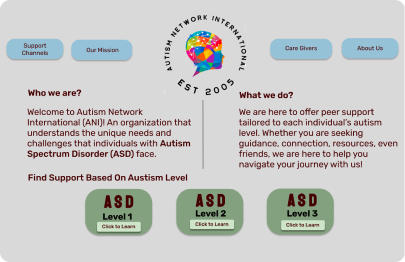

Space App

Research Problem
Space Travel is an emerging tourism possibility, but how do we get people to understand the risk of space travel and introduce the idea that travel to space will be a possibility for all?
Research Impact
Experiences related to space travel can be low risk and help make space travel more acceptable an
Government Agency Website Redesign

Research Problem
People may find government agency websites to be a useful and trustworthy source for information and material. However, poor online customer experience and UX/UI design choices of a site can present to be an obstacle for users to find the right information.
Research Impact
Visual hierarchy and thoughtful information architecture can influence a users navigation approach in a website and help guide them to a desired action.
Nonprofit Organization Redesign
Research Problem
A non-profit Autism resource organization has a website created by individuals in the autism spectrum. The website appeared outdated, text heavy, with poor navigation. The redesign relied heavily on research and catering the color scheme for individuals in the autism spectrum.
Research Impact
Secondary research can shape the design decisions of the website. In addition, empathy and the consistency in color and active buttons can help guide users.